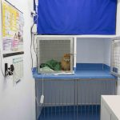
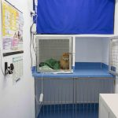
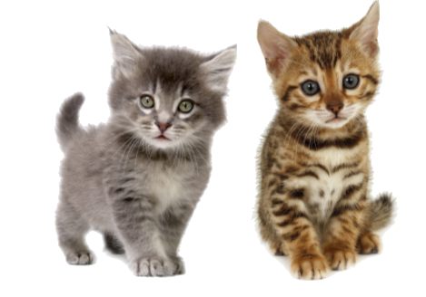

Nuestras mascotas son parte de nuestra familia y se merecen ser tratados como tales.
Por eso desde la clínica Puertochico trabajamos cada día no solo para ofrecerte un servicio médico completo y de calidad, sino para hacerlo de forma comprensiva y cercana tanto para las mascotas como para sus propietarios.
Nuestro equipo está en formación contínua para mantener la práctica clínica al máximo nivel profesional, permaneciendo al corriente de los últimos avances médicos y técnicos en todo momento.Nos servimos de los equipos más modernos y los últimos avances en la medicina y farmacia veterinaria para realizar nuestro trabajo ofreciendo así un diagnóstico preciso y una medicina eficaz accesible para la mayoría de los propietarios.


 



-
Medicina general
- Nuestro equipo veterinario atenderá los problemas o síntomas que observes en tu mascota; mediante una exploración exhaustiva y las pruebas necesarias llegará a un diagnóstico y prescribirá el tratamiento más adecuado para tu mascota.
-
Medicina preventiva
- La prevención es la mejor forma cuidar de la salud de tu mascota. Protégela mediante vacunas, desparasitaciones y chequeos periódicos. Especialmente importante en el caso de mascotas de edad avanzada.
-
Diagnóstico por Imagen
- Contamos con servicio de radiología digital y un servicio externo ecografía para llegar a un diagnóstico acertado en el menor tiempo posible.
-
Ánalisis clínicos
- Disponemos de un laboratorio completamente equipado donde poder realizar analíticas sanguíneas, anális de orina, coprológicos, citologías, raspados, tricogramas y test serológicos.
-
Cirugía general
- Disponemos de un quirófano completamente equipado para la realización de todo tipo de cirugías de tejidos blandos manteniendo al paciente monitorizado en todo momento. La seguridad del paciente es nuestra prioridad.
-
Hospitalización de día
- Contamos con una sala de hospitalización donde los pacientes pueden recuperarse y descansar cómodamente mientras estar permanentemente controlados por nuestro personal.
-
Odontología
- Ofrecemos una revisión dental gratuita para valorar el estado de salud dental de tu mascota. Contamos con los medios para realizar limpiezas de boca, extracciones, radiografías dentales y cirugía bucodental.
-
Medicina felina
- Los gatos no son perros pequeños, sabemos lo especiales que son y el estrés que sufren cada vez que salen de casa, nuestro equipo empleará las técnicas adecuadas para su manejo en un entorno lo más relajado posible. Además estamos especialmente formados en el diagnóstico y tratamiento de las patologías felinas.
-
Asesoramiento nutricional
- Disponemos de una selección de productos de alimentación de alta gama. Nuestro equipo te asesorará a la hora de decidir cual es el la mejor dieta para tu mascota teniendo en cuenta las características propias de su raza, su estado de salud y sus preferencias.
-
Tienda especializada
- Disponemos de todo tipo de accesorios para tu mascota así como juguetes, productos de aseo e higiene, golosinas y mucho más. Nuestro equipo te asesorará personalmente en la elección de los productos más adecuados para tu mascota.

Duerme tranquilo!
Ya se sabe que siempre es mejor prevenir que curar, por eso desde la clínica Puertochico presentamos nuestros planes de salud de perro y gato.
Nuestros planes de salud no solo buscan cubrir las necesidades sanitarias básicas de tu mascota, desparasitaciones y vacunas, sino que nuestro enfoque en la prevención nos ha llevado a incluir también consultas ilimitadas, analítica sanguínea, análisis coprológicos y de orina (solo gatos). Podrás acudir a consulta con tu mascota siempre que lo necesites de esta forma podremos detectar y prevenir cualquier posible enfermedad anticipadamente para que tu mascota disfrute una mayor esperanza y calidad de vida. Así mismo las pruebas diagnósticas incluidas también nos ayudan a valorar el estado general de salud de tu mascota así como a la detección precoz de diversas enfermedades.
La salud bucodental de las mascotas suele ser uno de los grandes olvidados a pesar de ser su importancia tanto estética como sanitaria. Por eso nuestro plan incluye una exploración bucodental para evaluar el estado de salud y un descuento de 20% en limpiezas de boca.
Por si esto fuera poco además podras disfrutar de descuentos del 15% en pruebas diagnósticas realizadas en clínica y 10% en cirugías en clínica y alimentación. Para las familias numerosas tenemos descuentos en los planes a partir de la segunda mascota.
Plan de Salud Perro

- petsCONSULTAS ILIMITADAS
- Acude a consulta o revisión simpre que lo necesites
- petsTodas las vacunas
- Vacuna polivalente y rabia anuales
- petsDesparasitaciones internas
- Las cuatro desparasitaciones recomendadas al año
- petsAnalítica sanguinea básica
- Nos ayuda a valorar el estado general de salud y a la detección precoz de diversas enfermedades
- petsAnálisis coprologicos
- Dos análisis coprológicos al año
- petsExploración odontológica
- Evaluamos el estado de salud bucodental
- petsDescuentos
- 20% en limpiezas bucales, 15% en pruebas en clínica y 10% en cirugías en clínica y alimentación
Plan Perro: 249€/año
Plan de Salud Gato
 box-shadow: 0 10px 20px rgba(0, 0, 0, 1);
box-shadow: 0 10px 20px rgba(0, 0, 0, 1);
- petsCONSULTAS ILIMITADAS
- Acude a consulta o revisión simpre que lo necesites
- petsTodas las vacunas
- Vacuna trivalente y leucemia anuales
- petsDesparasitaciones internas
- Las dos desparasitaciones recomendadas al año
- petsAnalítica sanguinea básica
- Nos ayuda a valorar el estado general de salud y a la detección precoz de diversas enfermedades
- petsAnálisis de orina
- Fundamental para el diagnostico y detección ptecoz de ciertas enfermedades felinas
- petsAnálisis coprologicos
- Dos análisis coprológicos al año
- petsDescuentos
- 20% en limpiezas bucales, 15% en pruebas en clínica y 10% en cirugías en clínica y alimentación
Plan Gato: 224€/año
Protégele desde el primer día!
En la clínica Puertochico sabemos que los primeros meses de vida de un cachorro y la llegada a su nueva casa requiere de unos cuidados especiales.
Por eso presentamos estos packs de cachorro/gatito que cubren las necesidades sanitarias más importantes del nuevo miembro de la familia y te permiten ahorrar más de un 20%. Revisamos a tu cachorro para comprobar su estado de salud y te guiamos por el proceso de desparasitación y vacunación. Nos encargamos de que cumpla con la legislación vigente mediante su identificación por microchip y la aplicación de la vacuna de la rabia (solo perros). Además en cada visita te iremos informando sobre cuidados del cachorro, su educación, alimentación, etc.
Por si fuera poco nuestros packs incluyen descuentos en esterilización/castración, en alimentación y artículos de tienda (juguetes, correas, collares, productos de higiene, etc.) que podrás utilizar durante todo un año. Para las familias numerosas tenemos descuentos en los packs a partir del segundo cachorro.
Pack Cachorro

- petsPrimera revisión
- Nos aseguramos de que todo esa bien cuando llega a casa
- petsTodas las vacunas de cachorro
- Puppy DP, vacuna y revacuna polivalente y vacuna de la rabia (con cada vacuna se realiza una exploración física completa)
- petsCoprológicos
- Dos análisis coprológicos
- petsDesparasitaciones
- Tres desparasitaciones de cachorro
- petsIdentificación y registro
- Implantación de microchip + pasaporte + registro en el RACIC
- petsDescuentos
- 15% en esterilización y 10% en alimentación y tienda durante un año
Pack Cachorro: 189€
Pack Gatito
- petsPrimera revisión
- Nos aseguramos de que todo esa bien cuando llega a casa
- petsTodas las vacunas de gatito
- Trivalente, Leucemia y revacuna de ambas (con cada vacuna se realiza una exploración física completa)
- petsCoprológicos
- Dos análisis coprológicos
- petsDesparasitaciones
- Tres desparasitaciones de cachorro
- petsTest FelV/FiV
- Comprobamos que no padece Leucemia o Inmundeficiencia, dos graves enfermedades
- petsIdentificación y registro
- Implantación de microchip + pasaporte + registro en el RACIC
- petsDescuentos
- 15% en esterilización y 10% en alimentación y tienda durante un año
Pack Gatito: 179€
La Clínica Veterinaria Puertochico está formada por un equipo joven de tres personas, dos veterinarias y un auxiliar. Nuestra pasión son los animales, por eso cada día nos esforzamos para cuidar de la salud de vuestras mascotas atendiendo a las necesidades y particularidades de cada una. Nuestro equipo te ofrecerá un trato cercano y personalizado estando siempre dispuestos a resolver todas tus dudas.
Raquel
- petsFundadora y directora veterinaria de la clínica
- petsLicenciada en Veterinaria por la Universidad de León en 2006
- petsPostgrado clínica veterinaria pequeños animales por la UAB 2011
- petsMiembro de AVEPA
Antes de fundar la clínica Puertochico en 2013 trabajó en varios centros veterinarios por todo el país. En especial en el Hospital veterinario Avenida, en Bilbao, centro de referencia en el norte de España, donde se formó como especialista en dermatología, neurología, urgencias y cuidados intensivos. Desde 2005 asiste regularmente a cursos de especialización así como congresos y ponencias veterinarias con el objetivo de mantener una formación continua.
Alvaro
- petsAuxiliar Veterinario
- petsResposable de Gestión y administración del centro veterinario
Aunque se formó como ingeniero desde 2013 cambió de rumbo y se implicó de lleno en el proyecto de la clínica Puertochico. Desde entonces se ha formado ampliamente como gestor y administrador así como auxiliar veterinario bajo la tutela de Raquel y con la realización de numerosos cursos.
| Horario de apertura | |
|---|---|
| Lun, Mie, Vie: | - |
| Martes y Jueves: |
-
- |